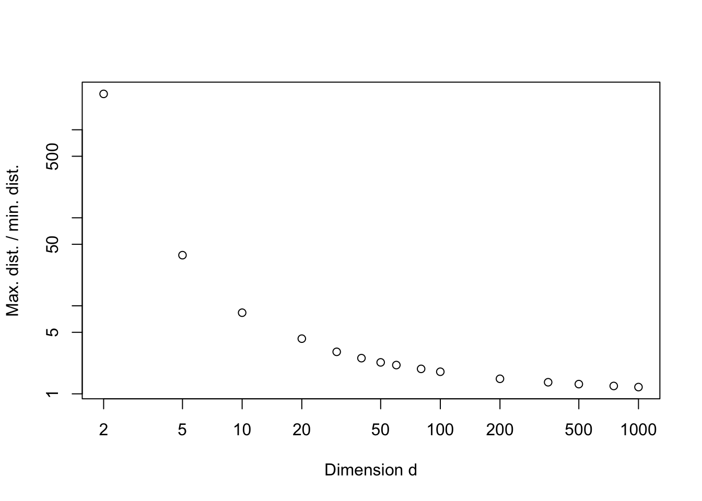

PART II: Dimension reduction methods
In many applications, a large number of variables are recorded for each experimental unit under study. For example, if we think of individual people as the experimental units, then in a health check-up we might collect data on age, blood pressure, cholesterol level, blood test results, lung function, weight, height, BMI, etc. If you use websites such as Amazon, Facebook, and Google, they store thousands (possibly millions) of pieces of information about you (this article shows you how to download the information Google stores about you, including all the locations you’ve visited, every search, youtube video, or app you’ve used and more). They process this data to create an individual profile for each user, which they can then use to create targetted adverts.
When analysing data of moderate or high dimension, it is often desirable to seeks ways to restructure the data and reduce its dimension whilst retaining the most important information within the data or preserving some feature of interest in the data. There a variety of reasons we might want to do this.
- In reduced dimensions, it is often much easier to understand and appreciate the most important features of a dataset.
- If there is a lot of reduncancy in the data, we might want to reduce the dimension to lower the memory requirements in storing it (e.g. with sound and image compression).
- In high dimensions, it can be difficult to analyse data (e.g. with statistical methods), and so reducing the dimension can be a way to make a dataset amenable to analysis.
In this part of the module we investigate three different methods for dimension reduction: Principal Component Analysis (PCA) in Chapter 4; Canonical Correlation Analysis (CCA) in Chapter 5; and Multidimensional Scaling (MDS) in Chapter 6. Matrix algebra (Chapters 2 and 3) plays a key role in all three of these techniques.
A warning
Beware that high-dimensional data can behave qualitatively differently to low-dimensional data. As an example, lets consider 1000 points uniformly distributed in \([0,1]^d\), and think about how close together or spread out the points are. A simple way to do this is to consider the ratio of the maximum and minimum distance between any two points in our sample.
N<-1000
averatio <-c()
ii<-1
for(d in c(2,5,10,20,30,40,50,60,80,100, 200, 350, 500, 750, 1000)){
averatio[ii] <- mean(replicate(10, {
X<-matrix(runif(N*d), nc=d)
d <- as.matrix(dist(X))
# this gives a N x N matrix of the Euclidean distances between the data points.
maxdist <- max(d)
mindist <- min(d+diag(10^5, nrow=N))
# The diagonal elements of the distance matrix are zero,
# so I've added a big number to the diagonal
# so that we get the minimum distance between different points
maxdist/mindist}))
ii <- ii+1
}
plot(c(2,5,10,20,30,40,50,60,80,100, 200, 350, 500, 750, 1000),
averatio, ylab='Max. dist. / min. dist.', xlab='Dimension d', log='xy')
So we can see that as the dimension increases, the ratio of the maximum and minimum distance between any two random points in our sample tends to 1. In other words, all points are the same distance apart!